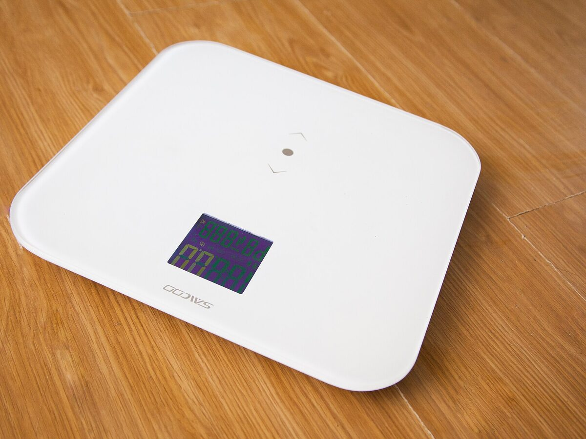
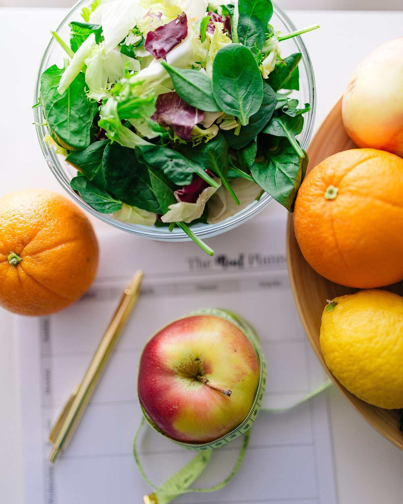
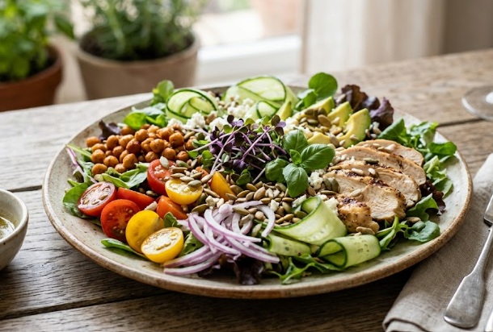
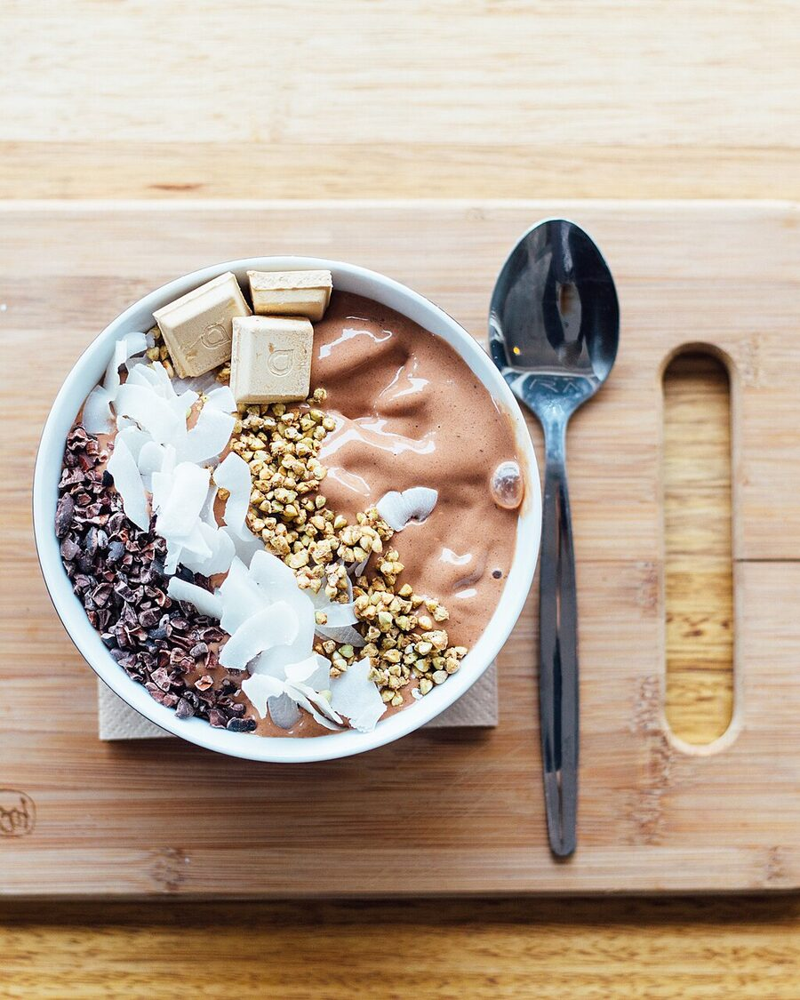
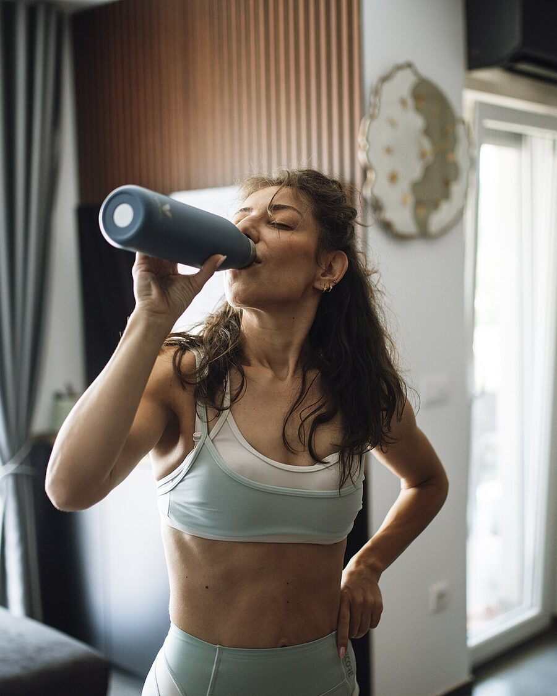

Aktivitas fisik
Target gerak yang realistis, disesuaikan kemampuan awal.
Mulai perjalanan menuju berat badan ideal bersama SLIMFie. Layanan medis online yang praktis, ditangani tenaga medis berlisensi. Tanpa antre di ruang tunggu dan ringkas.
IMT dihitung dari berat (kg) dibagi kuadrat tinggi badan (m). Kategori mengikuti klasifikasi Asia-Pasifik yang dipakai di Indonesia.
Rentang IMT normal untuk tinggi Anda sekitar 50,4–62,3 kg. Selisih dengan berat saat ini sekitar 12,7 kg.
IMT adalah alat skrining awal, bukan diagnosis. Dokter Sp.GK akan menilai komposisi tubuh, lingkar pinggang, dan kondisi kesehatan Anda secara menyeluruh.

Setiap orang memiliki kebutuhan yang berbeda. SLIMFie membantu Anda menjalani program pengelolaan berat badan yang disesuaikan dengan kondisi kesehatan, tujuan, dan gaya hidup, dengan pendampingan langsung dari profesional.
Tiga langkah dari evaluasi awal hingga pendampingan. Biaya dijelaskan sejak awal, tanpa biaya tersembunyi.
Ceritakan kondisi kesehatan, riwayat berat badan, kebiasaan sehari-hari, serta tujuan yang ingin Anda capai melalui evaluasi awal secara online.
Informasi Anda akan ditinjau oleh tenaga medis yang berwenang untuk menilai kebutuhan, faktor risiko, dan pilihan program yang sesuai.
Setelah evaluasi, dokter akan membahas rekomendasi yang sesuai dengan kondisi dan tujuan kesehatan Anda. Rencana dapat mencakup konsultasi medis, panduan gizi, perubahan gaya hidup, serta terapi obat apabila terdapat indikasi medis.
Anda akan memperoleh penjelasan mengenai manfaat, risiko, alternatif, dan pemantauan yang diperlukan sebelum mengambil keputusan.
Jalankan rencana yang telah disepakati bersama tenaga medis, dengan panduan pola makan, aktivitas fisik, dan kebiasaan sehari-hari.
Jika obat diresepkan, pengadaan dan pengirimannya mengikuti resep, ketentuan yang berlaku, serta prosedur penyaluran obat yang sah.
Penurunan berat badan yang bertahan direncanakan dari makanan sehari-hari yang masuk akal untuk dijalani.



Resep SLIMFie adalah terapi yang diresepkan dokter spesialis gizi klinik setelah evaluasi. Setiap resep mencantumkan jenis obat, dosis, aturan pakai, dan jadwal pemantauan, lalu disiapkan melalui jalur pelayanan kefarmasian yang sesuai dengan ketentuan di Indonesia.
Berat badan dipengaruhi banyak hal: pola makan, aktivitas fisik, tidur, kondisi kesehatan, lingkungan, dan faktor biologis. Karena itu program disusun bersama Anda, bukan dipaksakan pada Anda.
Target gerak yang realistis, disesuaikan kemampuan awal.
Tidur cukup membantu mengatur nafsu makan dan energi.
Cairan cukup, tanpa minuman berpemanis tambahan.
Polanya dikenali, lalu dibantu dengan langkah konkret.

SLIMFie menggunakan penjelasan mengenai resep, penyedia layanan, dan status persetujuan obat di Indonesia.
Informasi penting mengenai terapi medis
Obat hanya diberikan apabila terdapat indikasi medis dan setelah evaluasi serta konsultasi dengan dokter yang berwenang. Jenis terapi, manfaat, risiko, efek samping, dan kebutuhan pemantauan akan dijelaskan.
Pemenuhan resep dilakukan melalui jalur pelayanan kefarmasian yang sesuai dengan ketentuan yang berlaku di Indonesia.
Bergabunglah dengan orang-orang yang memilih pendekatan lebih personal untuk mengelola berat badan. Temukan dukungan medis dan pendampingan yang membantu Anda membangun kebiasaan sehat sesuai kondisi dan tujuan Anda.
Testimoni bersifat ilustratif. Hasil setiap orang berbeda dan dipengaruhi kondisi medis, kepatuhan menjalani program, serta faktor lain.
Satu langkah kecil hari ini.
Rp199.000 per konsultasi dokter Sp.GK. Biaya ini sudah termasuk evaluasi kesehatan, penentuan rencana, dan penjadwalan konsultasi video. Biaya terapi atau obat, bila diindikasikan, diinformasikan terpisah sebelum Anda menyetujui.
Tidak. Obat hanya diberikan apabila terdapat indikasi medis setelah evaluasi dan konsultasi dengan dokter yang berwenang. Banyak program cukup dengan panduan gizi dan perubahan gaya hidup.
Konsultasi berlangsung lewat video call Google Meet. Setelah pembayaran lunas, Anda memilih jadwal di dashboard pasien. Dua dokter Sp.GK bergantian berpraktik Senin–Sabtu pukul 08.00–11.30 dan 13.30–17.30 WIB, 20 menit per sesi. Setelah dokter menyetujui jadwal Anda, tautan video muncul di dashboard.
Setelah resep diverifikasi dan pembayaran dikonfirmasi, obat disiapkan apoteker dan dikirim ke alamat Anda melalui kurir. Anda menerima nomor resi untuk melacak pengiriman.
Evaluasi awal mencakup skrining klinis. Beberapa kondisi, misalnya penyakit ginjal berat, riwayat pankreatitis, atau gangguan makan, memerlukan penilaian khusus atau persetujuan dokter utama Anda sebelum program dimulai.
Tidak. SLIMFie bukan layanan gawat darurat. Untuk keluhan akut, segera hubungi fasilitas kesehatan terdekat.
Pertanyaan tentang program, jadwal konsultasi, pembayaran, atau tindak lanjut dapat dikirim melalui email. Kami membalas pada hari yang sama, termasuk akhir pekan.
Jalur utama untuk pertanyaan program dan tindak lanjut medis.
cs@slimfie.com Kirim emailIsi evaluasi singkat, selesaikan pembayaran, lalu pilih jadwal konsultasi video bersama dokter Sp.GK.
Evaluasi awal 3–5 menit Mulai konsultasiData kesehatan Anda bersifat rahasia dan hanya diakses dokter.
Bukan layanan gawat darurat.
Penanggung jawab layanan medis SLIMFie.